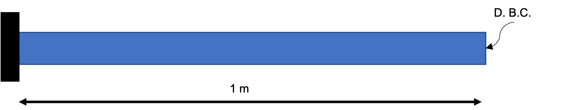
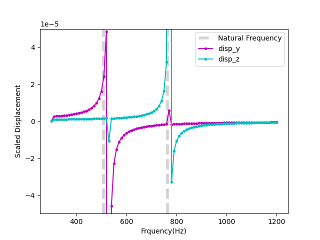
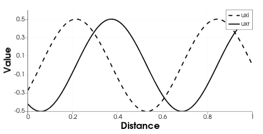

Frequency Domain Analysis
The following example presents two frequency domain analysis of a cantilever beam done in the MOOSE Solid Mechanics module. The first example computes a frequency response function of the cantilever beam and identifies the first two eigenvalues of beam. The second analysis computes the dynamic response at a single frequency (time-harmonic problem). A frequency domain analysis provides the structural response at a discrete set of frequencies. At each frequency, an independent steady state simulation is performed. This document provides an example of modeling a dynamic problem at a single frequency (time-harmonic problem).
Frequency domain analysis is often used to determine a frequency response function (FRF). An FRF describes the relationship between an input (frequency and amplitude of the input forcing source) and output (displacement response of a system). For simple systems, an analytic FRF can be derived. For more complex systems, the FRF is numerically obtained by determining the system response over a range of frequencies. The frequencies corresponding to the peaks on the FRF plot indicate natural frequencies of the system (eigen/fundamental frequencies). The mode shape (eigenvector) is given by the displacement profile at a natural frequency.
Other applications of frequency domain dynamics are: (1) computation of band structure (dispersion curves) of lattices/metamaterial, (2) inverse design for vibration control, e.g. design a system so that it has as minimum/maximum response at particular frequency, (3) material properties inversion/optimization given discrete responses.
Frequency domain analyses can be advantageous over its time domain counterpart in several cases, for example, when the frequency spectrum of a signal consists of a few frequencies, or, when it is needed to have a better control of the numerical dispersion.
Problem Description
The equations of motion for a one dimensional isotropic elastic solid is given by the following partial differential equation: (1) where is the modulus of elasticity, and is the density. To convert to the frequency domain, we consider that a plane wave given by (2) is a solution to Eq. (1) where is in general a complex number depending on the boundary conditions, is the wave number, where is the frequency, and . By assuming Eq. (2) is a a solution to Eq. (1) we can solve Eq. (1) in the frequency domain by taking a Fourier transform of to get . The frequency domain version of Eq. (1) is the Helmholtz equation given by (3) Eq. (3) is easily solved in MOOSE where is the state variable. The first term on the right hand side is still captured by the Stress Divergence kernel. The second RHS term, , is captured by the Reaction kernel where the Reaction rate is given by . Eq. (3) is only valid for small displacements and linear elasticity. A damping term can also be included in Eq. (1) and Eq. (3).
The boundary conditions also need to be converted to the frequency domain through a Fourier transform. A time harmonic Neumann BC given by (4) with amplitude and frequency , is transformed to (5)
Cantilever Beam Example
The cantilever beam shown in Figure 1 is subjected to a time harmonic force on the right side in the out-of-plane and vertical directions. In this example the frequency of the time varying load is swept over a range. The displacement at the midpoint of the beam is recorded at each frequency. This type of output, displacement as a function of frequency, is a frequency response function (FRF) or transfer function. Frequencies corresponding to the displacement peaks in the FRF indicate natural frequencies/modes.

Figure 1: 2D cantilever problem with a prescribed displacement boundary condition on the right end.
The analytic solution for the free vibration of a cantilever Euler Bernoulli beam. The analytic eigenvalues, , are given by where is the moment of inertia, the cross sectional area, the beam length, and are the wave numbers. For a cantilever beam, the first three wave numbers, , given for the Euler Bernoulli beam dimensions given as the dimensions of the cantilever beam are 1m with cross section dimensions 0.1m and 0.15m are
The moment of inertia for a rectangular cross section beam is , where is the dimension in the direction being loaded and is the other cross sectional dimension.
For an aluminum cantilever beam, 68e9 Pa, 0.36, 27.e3 kg/m. The analytic first and second natural frequencies for this system bending in directions tangential to the beam axis are:
509Hz
763Hz
Both of these frequencies use the same value of , but with the moment of inertia recomputed for bending about the different widths, where the lower frequency is the first bending mode about the thin direction (0.1m) and the next higher frequency is the first bending mode about the thicker direction (0.15m). The simulated natural frequencies given by peaks in the FRF for a coarse mesh are:
600Hz
800Hz
where 50Hz frequency increments are used in the FRF frequency sweep. The FRF where each displacement is plotted separately is shown in Figure 3 where each mode is excited separately. A scaled displacement magnitude is shown in Figure 2 for a coarse and fine mesh. A coarse mesh shows a stiffer response and and the natural frequencies are over-estimated. The natural frequencies converge on the analytic result from above as the mesh is refined. The simulations will fail if they are run at the natural frequencies because the solution will become singular, i.e the displacements blow-up as shown by the asymptotes in Figure 3.

Figure 2: Cantilever beam displacement magnitude for coarse mesh (0.1m elements) and fine mesh (0.033m elements). Analytic results are shown in grey.

Figure 3: Cantilever beam y- and z-displacements for the fine mesh (0.033m elements). Analytic results are shown in grey.
The input file for the coarse simulation shown in Figure 2 and Figure 3 is given in Listing 1.
Listing 1:
# Frequency Response function for cantilever beam:
# Analytic results: 509Hz and 763Hz
# Simulation results with coarse mesh: 600Hz and 800Hz
[Mesh]
type = GeneratedMesh
elem_type = HEX8
dim = 3
xmin=0
xmax=1
nx=10
ymin=0
ymax=0.1
ny = 1
zmin=0
zmax=0.15
nz = 2
[]
[GlobalParams]
order = FIRST
family = LAGRANGE
displacements = 'disp_x disp_y disp_z'
[]
[Problem]
type = ReferenceResidualProblem
reference_vector = 'ref'
extra_tag_vectors = 'ref'
group_variables = 'disp_x disp_y disp_z'
[]
[Physics]
[SolidMechanics]
[QuasiStatic]
[all]
strain = SMALL
add_variables = true
new_system = true
formulation = TOTAL
[]
[]
[]
[]
[Kernels]
#reaction terms
[reaction_realx]
type = Reaction
variable = disp_x
rate = 0# filled by controller
extra_vector_tags = 'ref'
[]
[reaction_realy]
type = Reaction
variable = disp_y
rate = 0# filled by controller
extra_vector_tags = 'ref'
[]
[reaction_realz]
type = Reaction
variable = disp_z
rate = 0# filled by controller
extra_vector_tags = 'ref'
[]
[]
[AuxVariables]
[disp_mag]
[]
[]
[AuxKernels]
[disp_mag]
type = ParsedAux
variable = disp_mag
coupled_variables = 'disp_x disp_y disp_z'
expression = 'sqrt(disp_x^2+disp_y^2+disp_z^2)'
[]
[]
[BCs]
#Left
[disp_x_left]
type = DirichletBC
variable = disp_x
boundary = 'left'
value = 0.0
[]
[disp_y_left]
type = DirichletBC
variable = disp_y
boundary = 'left'
value = 0.0
[]
[disp_z_left]
type = DirichletBC
variable = disp_z
boundary = 'left'
value = 0.0
[]
#Right
[BC_right_yreal]
type = NeumannBC
variable = disp_y
boundary = 'right'
value = 1000
[]
[BC_right_zreal]
type = NeumannBC
variable = disp_z
boundary = 'right'
value = 1000
[]
[]
[Materials]
[elastic_tensor_Al]
type = ComputeIsotropicElasticityTensor
youngs_modulus = 68e9
poissons_ratio = 0.36
[]
[compute_stress]
type = ComputeLagrangianLinearElasticStress
[]
[]
[Postprocessors]
[dispMag]
type = NodalExtremeValue
value_type = max
variable = disp_mag
[]
[]
[Functions]
[./freq2]
type = ParsedFunction
symbol_names = density
symbol_values = 2.7e3 #Al kg/m3
expression = '-t*t*density'
[../]
[]
[Controls]
[./func_control]
type = RealFunctionControl
parameter = 'Kernels/*/rate'
function = 'freq2'
execute_on = 'initial timestep_begin'
[../]
[]
[Executioner]
type = Transient
solve_type=LINEAR
petsc_options_iname = ' -pc_type'
petsc_options_value = 'lu'
start_time = 300 #starting frequency
end_time = 1200 #ending frequency
nl_abs_tol = 1e-6
[TimeStepper]
type = ConstantDT
dt = 50 #frequency stepsize
[]
[]
[Outputs]
csv=true
exodus=false
console = false
[]
This uses the SolidMechanics QuasiStatic Physics to setup the StressDivergence Kernels because this simulation only includes real displacements. A Transient executioner with a ConstantDT timestepper is used to sweep over frequencies where the time is substituted for the frequency. The time is converted to the frequency dependent Reaction rate using a ParsedFunction and is applied to the rate using the RealFunctionControl.
In the next example, imaginary displacements will be introduced by including an absorbing boundary condition. Imaginary displacement represent a phase shift in the problem and often result from damping.
Uniaxial Beam Example
In the Fourier domain, The displacement field is in general a complex number. In the previous example, only the real part of the displacement field was accounted for. In this example, an absorbing boundary condition will introduce a coupling between the real and imaginary displacement fields. This example uses the uniaxial beam shown in Figure 1 which is subjected to time-harmonic displacement on right and has an absorbing boundary condition on left.
For the boundary condition, we apply the Sommerfeld radiation condition on the left, and a harmonic source (cosine) on the right as follows: (6) The frequency domain version of Eq. (6) is (7)
As mentioned before, is complex-valued function/variable in the form of where and are the real and the imaginary part of . At this stage, we split the complex system of equations into two real valued systems that live on the same mesh. Eq. (3) for a complex valued system becomes (8) The Sommerfeld boundary conditions are given by (9) Note that this decomposition is exact and no information is lost from the decomposition into real and imaginary parts. The real and imaginary Stress Divergence kernels are shown in Listing 2. Care must be taken in defining these kernels and the respective displacements for the problem. Setting the displacements in the [GlobalParams] block could have unintended consequences and should be set in the individual kernels that use them. Also note that, as a result of the radiation BCs on left, and are coupled, hence the two systems in Eq. (8) are needed. The Sommerfeld radiation BCs are applied using a CoupledVarNeumannBC in Listing 3.
Listing 2: Real and imaginary StressDivergence and Reaction Kernels.
[Kernels]
#stressdivergence terms
[urealx]
type = StressDivergenceTensors
variable = uxr
displacements = 'uxr'
component = 0
base_name = real
[]
[uimagx]
type = StressDivergenceTensors
variable = uxi
displacements = 'uxi'
component = 0
base_name = imag
[]
#reaction terms
[reaction_realx]
type = Reaction
variable = uxr
rate = '${fparse -w*w}'
[]
[reaction_imagx]
type = Reaction
variable = uxi
rate = '${fparse -w*w}'
[]
[]
Listing 3: Real and imaginary BCs.
[BCs]
#Left
[uxr_left]
type = CoupledVarNeumannBC
variable = uxr
boundary = 'left'
v = uxi
coef = '${fparse -w}'
[]
[uxi_left]
type = CoupledVarNeumannBC
variable = uxi
boundary = 'left'
v = uxr
coef = '${fparse w}'
[]
#Right
[BC_right_xreal]
type = DirichletBC
variable = uxr
boundary = 'right'
value = 0.5
[]
[BC_right_ximag]
type = DirichletBC
variable = uxi
boundary = 'right'
value = 0
[]
[]
For this example given in Listing 2 and Listing 3, the Young's modulus and the density are constants equal to unity. The amplitude and frequency of the harmonic displacement BC in Eq. (9) are and .
The analytical solution of Eq. (8) and the associated boundary conditions in Eq. (9) are obtained by expressing the solution of as a combination of sines and cosines representing the traveling and reflecting waves, i.e .
Applying the boundary conditions, and considering the wave to travel in the negative direction, we obtain, with . Plugging these values into the analytical solution gives: The moose solution for this problem is shown in Figure 4.

Figure 4: Real and imaginary displacements at .